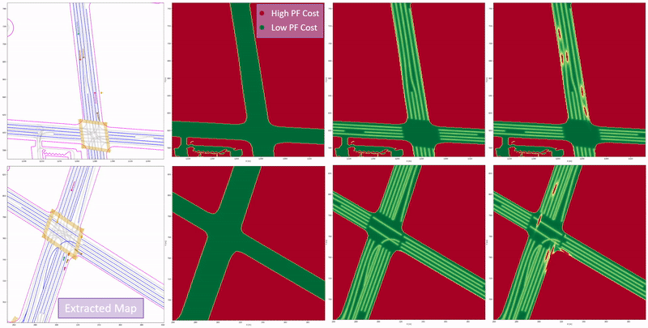
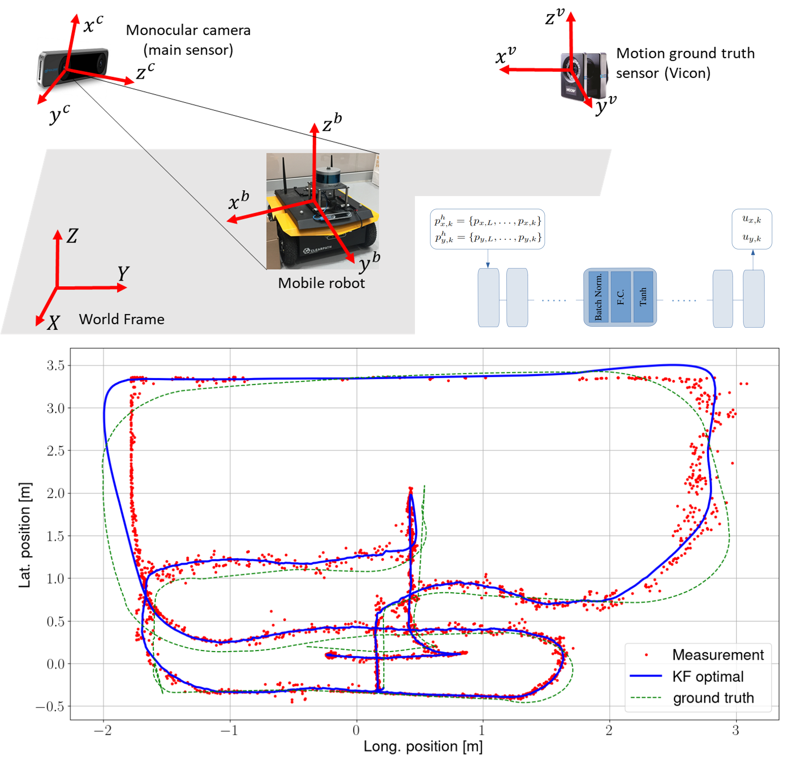
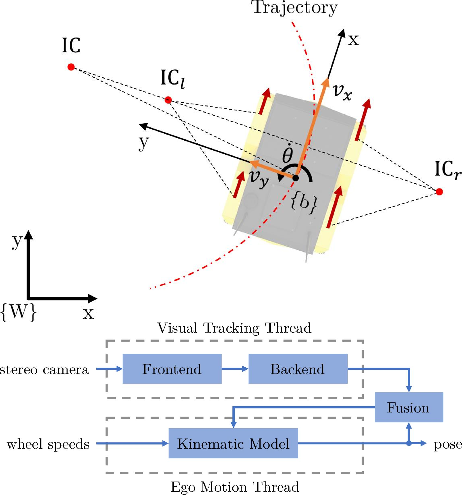
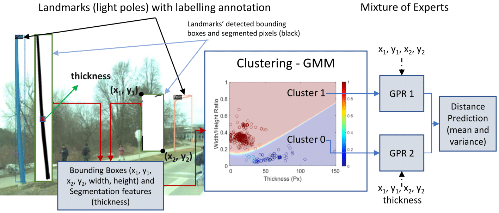
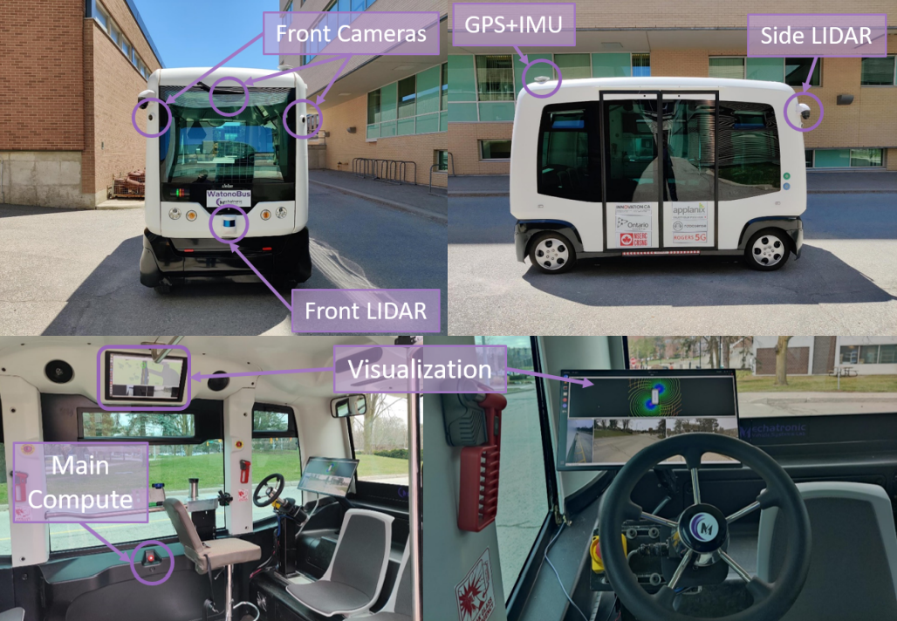
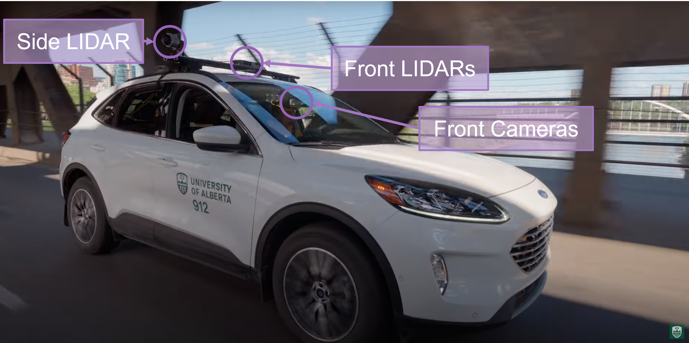

|
I am currently a Postdoctoral Fellow at the Center for Autonomy working with Professors Atlas Wang and Ufuk Topcu. I am part of the Autonomous Systems Group and the VITA Research Group at the University of Texas at Austin. My research is centered at the intersection of generative AI, assured active perception, prediction, and trustworthy sequential decision making for autonomous systems. I received my PhD in Mechatronics Engineering from University of Waterloo in 2023. During my PhD, I led efforts on the WATonoBus project at MVS Lab working on software and algorithmic development of perception and prediction modules required for Canada’s first autonomous shuttle bus approved via the ministry’s autonomous vehicle pilot. During this time, I also interned at GM R&D where I worked on deep learning-based state estimation. I have also concurrently been a visiting research scholar since 2021 at the NODE Lab at University of Alberta working on NODE lab's autonomous vehicle. Prior to this, I received my Bachelor's degree in Mechanical Engineering (yes, I was directly admitted to a PhD from Bachelor's) in 2018 with focus on Mechatronics and Robotics from University of Toronto. During this time, I conducted research with Professor Yu Sun on micro and nano robotics and interned at Clearpath Robotics and was awarded NSERC Research Awards for both. [ Email / Google Scholar / LinkedIn / CV ] |

|
News
- November 2023: Paper Preprint - Our paper on Fine-tuning Language Models Using Formal Methods Feedback is up!
- October 2023: Talk @ UC Berkeley - I gave a talk on my work at the DARPA ANSR PI meeting at UC Berkeley.
- September 2023: Organizing Committee - I am part of the organizing committee for ITSC 2024.
- September 2023: Started as a Postdoc - I started as a Postdoctoral Fellow at The University of Texas at Austin!
- August 2023: Paper Accepted @ ITSC 2023 - Our work DynaStreet-SVO: A Stereo Visual Odometry Framework with Augmented Perception for Dynamic Urban Environments was accepted to ITSC 2023.
- July 2023: Paper Published @ T-IV 2023 - Our work Integrated Inertial-LiDAR-Based Map Matching Localization for Varying Environments was published in T-IV 2023.
- June 2023: Featured Video - I was featured on the homepage of Artificial Intelligence Research and Innovation at University of Alberta via a promo video. I also discussed about how I use AI in my research via this U of A video and article.
- June 2023: Workshop - Co-organizing a workshop Reliable State Estimation and Distributed Controls in Intelligent Vehicular Networks at IV 2023.
- May 2023: Defended PhD Thesis - My thesis work is out on UW Space.
- May 2023: Paper Published @ T-ITS 2023 - Our work MPC-PF: Socially and Spatially Aware Object Trajectory Prediction for Autonomous Driving Systems Using Potential Fields was accepted to T-ITS 2023.
- April 2023: Guest Lecture - Gave a guest lecture on WATonoBus ‑ Algorithms and Software Structure for an All Weather Shuttle for ECE495 at University of Waterloo.
- October 2022: Paper Published @ IROS 2022 - I will be presenting our work MPC-PF: Social Interaction Aware Trajectory Prediction of Dynamic Objects for Autonomous Driving Using Potential Fields at IROS 2022 in Kyoto.
- August 2022: Paper Published @ CASE 2022 - Our work on Augmented Visual Localization Using a Monocular Camera for Autonomous Mobile Robots is accepted to CASE 2022.
- August 2022: Paper Published @ Robotics 2022 - Our work on Infrastructure-Aided Localization and State Estimation for Autonomous Mobile Robots is accepted to Robotics 2022.
- June 2021: WATonoBus Project - The autonomous shuttle project I am leading at MVS Lab was given approval as part of the ministry's autonomous vehicle pilot.
- September 2020: Paper Published @ ITSC 2020 - I will be presenting our work Real‑time Pedestrian Localization and State Estimation Using Moving Horizon Estimation at ITSC 2020 in Greece.
- September 2020: Engineering Excellence Doctoral Fellowship - I was awarded with the EEDF for my PhD work.
- May 2019: Internship - Joined GM at their Global R&D center as an AV Software Engineering Intern working on Deep Learning-based State Estimation.
- May 2018: Completed BASc - I finished my Bachelor's program at University of Toronto and was admitted to a direct PhD program at University of Waterloo.
- May 2017: Internship funded with NSERC Industrial Experience Award - Joined Clearpath Robotics as an R&D Appications Engineering Intern working on ROS projects.
- May 2016: Research Internship funded with NSERC Undergraduate Research Award - Worked with Professor Yu Sun at the Robotics Institute of University of Toronto: Advanced Micro and Nanosystems Lab.
Publications
|  |
Neel P. Bhatt, Amir Khajepour, Ehsan Hashemi Transactions on Intelligent Transportation Systems (T-ITS), 2023. Outperforms 2nd and 3rd place on Waymo Motion Dataset (2021) [ Paper / Video ] We propose MPC-PF, a model that embeds surrounding object and road map information in the form of a potential field to model agent-agent and agent-space interactions. We show the efficacy of our multi-object trajectory prediction method both qualitatively and quantitatively achieving state-of-the-art results on the Waymo Open Motion Dataset and also on other common urban driving scenarios where social norms must be followed. |

|
Neel P. Bhatt, Amir Khajepour, Ehsan Hashemi International Conference on Intelligent Robots and Systems (IROS), 2022. [ Paper / Video ] Predicting object motion behaviour is a challenging but crucial task for safe decision making and path planning for an autonomous vehicle. We tackle this problem by introducing MPC-PF: a novel potential field-based trajectory predictor that incorporates social interaction and is able to tradeoff between inherent model biases across the prediction horizon. Through evaluation on a variety of common urban driving scenarios, we show that our model is capable of producing accurate predictions for short and long term timesteps and demonstrate significance of model architecture via an ablation study. |
|  |
Ali Salimzadeh, Neel P. Bhatt, Ehsan Hashemi International Conference on Automation Science and Engineering (CASE), 2022. [ Paper / Video / Slides ] We develop a robust infrastructure-aided localization framework using only a single low-cost camera with a fisheye lens. To reduce the computational load, we use an ROI alongside estimated depth to re-project the robot pointcloud cluster with geometrical outlier detection. We use this position and depth information in an uncertainty-aware observer with adaptive covariance allocation and bounded estimation error to deal with position measurement noises at the limits of the field of view, and intermittent occlusion in dynamic environments. Moreover, the aforementioned motion model, uses a learning-based prediction model for input estimation based on a moving buffer of the robot position. Several experiments with occlusion and intermittent visual disruption/detection confirm effectiveness of the developed framework in re-initializing the estimation process after failure in the visual detection, and handling temporary data loss due to sensor faults or changes in lighting conditions. |
|  |
Daniel Flögel, Neel P. Bhatt, Ehsan Hashemi Robotics Journal, 2022. [ Paper ] A slip-aware localization framework is proposed for mobile robots experiencing wheel slip in dynamic environments. The framework fuses infrastructure-aided visual tracking data and proprioceptive sensory data from a skid-steer mobile robot to enhance accuracy and reduce variance of the estimated states. Covariance intersection is used to fuse the pose prediction and the visual thread, such that the updated estimate remains consistent. As confirmed by experiments on a skid-steer mobile robot, the designed localization framework addresses state estimation challenges for indoor/outdoor autonomous mobile robots which experience high-slip, uneven torque distribution at each wheel (by the motion planner), or occlusion when observed by an infrastructure-mounted camera. |
|  |
Bruno H. Groenner Barbosa, Neel P. Bhatt, Amir Khajepour, Ehsan Hashemi Submitted to Transactions on Systems, Man, and Cybernetics: Systems (SMCS). [ Paper ] We present a generic feature-based navigation framework for autonomous vehicles using a soft constrained Particle Filter. After obtaining features of mapped landmarks in instance-based segmented images acquired from a monocular camera, vehicle-to-landmark distances are predicted using Gaussian Process Regression (GPR) models in a mixture of experts approach. Experimental results confirm that the use of image segmentation features improves the vehicle-to-landmark distance prediction notably, and that the proposed soft constrained approach reliably localizes the vehicle even with reduced number of landmarks and noisy observations. |

|
Ehsan Mohammadbagher*, Neel P. Bhatt*, Ehsan Hashemi, Baris Fidan, Amir Khajepour Intelligent Transportation Systems Conference (ITSC), 2020. [ Paper / Video ] We propose a constrained moving horizon state estimation approach to estimate an object's states in 3D with respect to a global stationary frame including position, velocity, and acceleration that are robust to intermittently noisy or absent sensor measurements utilizing a computationally light-weight fusion of 2D dections and projected LIDAR depth measurements. The performance of the proposed approach is experimentally verified on our dataset featuring urban pedestrian crossings. |
Featured Projects
|  |
[ Webpage / Video ] Our team started the WATonoBus autonomous shuttle project in 2018 and has since developed 2 such fully equipped shuttles and is near completion of the third shuttle. The WATonoBus is a platform that contains fully in-house equipped hardware and software stack and has been approved as part of the Ministry of Transportation Ontario’s Autonomous Vehicle Pilot Program currently providing daily free and fully autonomous service to passengers at the University of Waterloo. The University of Waterloo's Ring Road is a 2.7 km curvy road with many intersections and pedestrian crossings that represent an urban driving environment with several pedestrians, cyclists, and vehicles. The WATonoBus project is different from prior project in that it is aimed to operate in all weather conditions including adverse rain, fog, and snow. |
|  |
[ Webpage / Video ] Since 2021, I have been leading efforts at the NODE lab to develop hardware and software stack on the NODE lab's autonomous Ford Escape vehicle. This platform has been central in working on several research projects covering RL, visual odometry, SLAM, object detection. I also supervise several PhD and Masters students at the lab. |